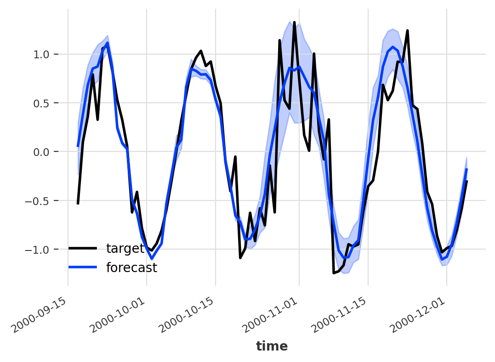

Probabilistic Forecasting Made Simple
Probabilistic Forecasting is something very cool, but it is not approachable in the current state of affairs.
While researching probabilistic forecasting in a client project I managed to find a paper which opens the door to any neural network with dropout - which is the majority. That is, we can do probabilistic forecasting with essentially any network!
Darts, a brilliant timeseries library, includes a very competent probabilistic forecasting but it’s not really applicable to all models. This is the reason that I started diving into the whole space of probabilistic forecasting. A probabilistic model includes not only a raw prediction value but a distribution of possible points, which ends up with a prediction like:

Probabilistic Model by unit8/darts
Additionally models like ARIMA and ExponentialSmoothing allows to do this kind of thing very easily, simply sample running simulations of their state-spaced models with a bit of randomly sampled errors. To solve this on their deep learning models darts decided to model distribution using a Likelihood class. What does this mean?
The model does not actually predict a value but a distribution, using Gaussian we’d predict two values - mean and std .
How to do probabilistic forecasting on any deep learning model
By combining the knowledge in Deep and Confident Prediction Time Series at Uber by L. Zhi & N. Laptev (2017) with What Uncertainties Do We Need in Bayesian Deep Learning for Computer Vision? by A. Kendall & Y. Gal (2017) one can conclude that it’s possible to model distributions using dropout during inference. In the Uber paper they use a special variant they call “Monte Carlo dropout”, which I don’t believe is required to achieve interesting results. Using the pure dropout-module which randomly zeroes some elements by a probability \(p\) sampling from a Bernoulli Distribution.
How do we do this?
- Activate Dropout during Inference.
- Do \(x\) predictions with a dropout probability \(p\).
- Based on these x predictions we have a distribution of data.
- Build a confidence interval from the points.
outs = torch.vstack([model.predict(in_data) for i in range(x)]) # Defined by confidence coefficients Z_TABLE = {0.8: 1.28, 0.85: 1.44, 0.9: 1.65, 0.95: 1.96, 0.99: 2.58, 0.999: 3.29, 0.9999: 3.89} # Confidence Interval with mean as line mean = outs.mean() lower = mean - Z_TABLE[confidence] * outs.std() upper = mean + Z_TABLE[confidence] * outs.std()
The possibilities
There’s a lot of possiblities, I’ll share two of our biggest ones.
1. Model Understanding (Weakness/Strength)
By returning a probabilistic forecast, i.e. a distribution/confidence interval, we can learn more about the model and its strengths/weaknesses.
In our project(s) we’ve seen that it opens a door to really figure out how to improve our models by focusing on the areas were the model is the most uncertain. This has proved to improve performance by a substantial amount which makes the effort worth it.
2. Downstream Consumer Happiness
We see that our clients trust the model further by being able to see how confident they are. Building trust between model and downstream consumer is really important to deliver an actual successful project, which once again makes the effort totally worth it!
Bonus: we also found that it opens new possibilities to chain of the inference power if you keep it in production, as your downstream tasks can now make use of a confidence interval rather than a raw data point. But the inference is very expensive compared to the usual (remember we do x predictions per prediction)!
Sources
Deep and Confident Prediction Time Series at Uber by L. Zhi & N. Laptev (2017) - https://arxiv.org/pdf/1709.01907.pdf
What Uncertainties Do We Need in Bayesian Deep Learning for Computer Vision? by A. Kendall & Y. Gal (2017) - https://arxiv.org/pdf/1703.04977.pdf